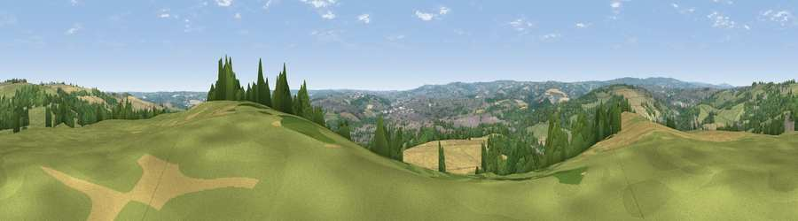

Viewpoint near Hundall
#17864 in England · top 20% of its area beats it · near HundallWhere it is
The exact computed spot (SK 38575 76475). Click the marker for map links.
The view, rendered

A 360° render of this exact spot computed from the terrain model, tree cover and land cover — summer colours, afternoon light, calibrated against photographs of famous viewpoints. Real trees, hedges and buildings will differ in detail.
The panorama
Grey silhouette: terrain skyline in each direction (720 bearings, Earth curvature and refraction included). Dashed green: skyline with trees (+15 m) and buildings (+8 m) as obstacles. Blue strip: how far the ground is visible on each bearing.
Where the view opens
Wedge length = distance to the farthest visible ground on that bearing (vegetation-aware). Rings at 10, 25 and 50 km.
What fills the view
34% grassland · 29% woodland · 25% cropland · 12% built-up
Angular shares of the visible panorama (visual magnitude), not map area. Landscape diversity 0.58 (0–1 Shannon).
Key numbers
More beautiful places nearby
The staircase of upgrades: each row has a higher view potential than everything closer. Driving times are estimates from straight-line distance, calibrated against real road routing — check an actual route before setting out.
| Place | Direction | Drive | Score |
|---|---|---|---|
| Viewpoint near Apperknowle | NNW · 3 km | ~6 min | 55.3 |
| Viewpoint near Ridgeway | NNE · 6 km | ~13 min | 67.6 |
| Viewpoint near Holmesfield | WNW · 10 km | ~19 min | 69.4 |
| Viewpoint near Hathersage | WNW · 15 km | ~27 min | 70.9 |
| High Rake | W · 18 km | ~31 min | 71.1 |
| Viewpoint near Whitley | NNW · 20 km | ~34 min | 72.1 |
| Viewpoint near Wharncliffe Side | NNW · 21 km | ~35 min | 75.2 |
| Tissington Hill | SW · 33 km | ~51 min | 75.5 |
53.28385, -1.42287 · source: screening · position refined by local search. Computed location — check access rights before visiting.